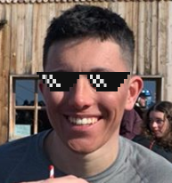

Pogo 7
Createur de pogo
-
Maxime Carron - Président POGO7
J'ai lancé un pogo en arrivant à l'N7 pendant une soirée FOY et des gens, qui mettaient inconnus en arrivant, m'ont suivi. Nous sommes alors tous devenue meilleurs amis et j'ai décidé de créer, avec eux, le club POGO7. J'ai remarqué que chacun d'eux avait un rôle essentiel dans nos pogo, je leur ai alors donné des postes en fonction de leurs qualités. Les candidatures sont ouvertes, venez me contacter sur mon facebook si vous voulez en savoir plus sur le blub mythique de l'N7.
-
Charly Lezzani - Respo YA-YAA
Pendant un pogo vous entendrez sûrement des "YA-YAA", ce bruit manifeste d'un bon pogo. Pour être sûr d'entendre cette douce mélodie pendant que l'on pogote, je me charge de lancer ce chant dés le début du pogo et de le faire perssister jusqu'à la fin. -
Thomas-Alexandre Nicolle - Respo Sécu
Du haut de mes 1m90 et à l'aide de mes pecs portant le nom de "Le lion blanc" pour le droit et "Le viking ténébreux" pour le gauche j'assure la sécurité au seins du pogo. Si vous tombez vous verrez une main se tendre vers vous, tel un cadeau de dieu, une main symbolisant l'espoir de continuer sa vie, une main qui vous relèvera pour que vous puissiez finir votre pogo dans de bonnes conditions, cette main sera la mienne.
-
Romain David - L'ingérable
Le pogo est est quelquechose de chaotique, il faut que vous y perdiez vos repères, que vous alliez au delà de vos limite. Suivez les mouvement de mon corp, si vous le pouvez, pour vivre cette aventure à 100%. -
Nayel Ferai - Respo Romain
Romain est souvent ingérable pendant les pogos, il fait fuire les débutants. C'est pourquoi mon rôle est essentiel, je dirai même que c'est le plus important de tous : gérer Romain. Ne paniquez donc pas si vous le voyez faire n'importe quoi, j'ai toujours un oeil sur lui et j'agis quand tout est sur le point de déraper. -
Gabriel Allouche - Respo Free-style
Pas besoin de gros boom pour un pogo de qualité, je peux débarquer à tout moment dans une de vos soirée et lacher un free-style de qualité sur lequel vous pourrez pogoter sans jamais vous arreter. -
Valentin Bason - Respo Meufs
Le pogo n'est pas fait que de testostéronne, les filles sont le bienvenue aussi. Si vous êtes une fille alors suivez mon sourir charmeur et vous pourrez peut-être espérer me croiser dans le pogo, ce qui se passera dans le pogo restera dans le pogo... -
Lucas PiroSex - Respo Lancement
J'ai lancé des pogos dans les moments les plus tristes de la vie de l'N7. Dans mon palmarés : une soirée GAT7BY où des rappeurs étaient invités. Aucun listeux n'osait se lancer, j'ai alors laissé parler mon corp et tout le monde m'a suivi. GAT7BY me sera internellement reconnaissant pour se pogo ayant mis l'ambiance à leur soirée.